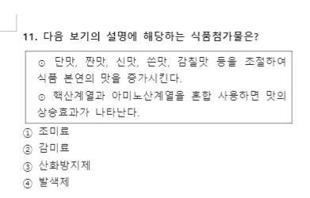

이거 생각보다 많이 틀림 ㅋㅋ
조금만 생각하면 누구나 풀수 있는 문제임

이거 생각보다 많이 틀림 ㅋㅋ
조금만 생각하면 누구나 풀수 있는 문제임
정답 야스ㄱㄱ
정답 msg
당연히 조미료라 생각했는데 생각보다 많이틀린대서 다른건가 고민했네;;
이거 틀린새끼나 맞췄다고 꺼드럭대는 새끼나 ㅋㅋ
우월감 느끼는 방법도 참 여러가지다
몰라도 상관없는 문젠데
이게 뭐라고 ;;;;
이쪽 관련 종사자도 아닌데
ㅋㅋㅋㅋㅋ꺼드럭 우수상감이네
뭔 조또아닌거 문제 하나 띡 가져와서 염병하고있네 ㅋㅋㅋ
한자 몰라서 감미료의 감이 감칠맛인 줄 알고 낚이는 건가
아는거 나와서 어깨가 들썩들썩하제?
합격한거 아니면 깝치지 말고 책펴라 ㅋㅋ
욕을 사서 먹네 병신새끼 ㅋㅋㅋㅋㅋ
넌 오래 살겠다 ㅋㅋㅋ
이새끼 왠지 직장에서 이런거 문제 내놓고 다른 사람이 맞춰도 '이야 xx씨 이런 것도 알아? 그렇게 안봤는데 똑똑하네?' ㅇㅈㄹ 할거같음
꺼드럭 거릴게 없어서 이런 문제 가져와서 꺼드럭대노 ㅋㅋ
조미료가 오답인줄 알았네
미친새낀가
아예
이야 이런애가 치팅하면 꺼드럭대는거구나
저거 공채가 아니라 고졸특채용 시험 같은디
가방끈이 보이는 글
ㅋㅋ무슨 씨발 리만 가설쯤이나 되는 줄 알았네 대단하다 대단해
근데 9급시험 봄에 치는거 아니었나? 겨울에도 침?
고졸특채인듯
답안알려줘서 붐업
하다하다 조미냥이가 나오네 샤발 ㅋㅋㅋㅋㅋㅋ
시험 공부 한번이라도 해본사람은 알텐데
시험장에서 푸는거랑 시험장밖에서 푸는거랑 다른거...
이게 진짜 공무원 시험문제 맞아? 아니 아무리 9급이라지만...이게...
시간촉박하니 틀릴수도 있지